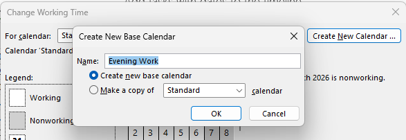
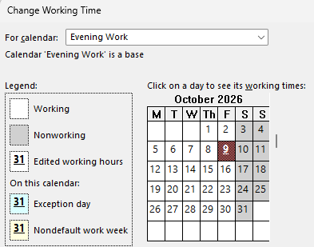
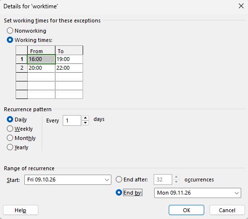
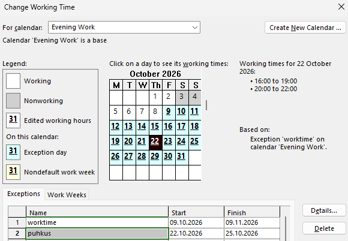
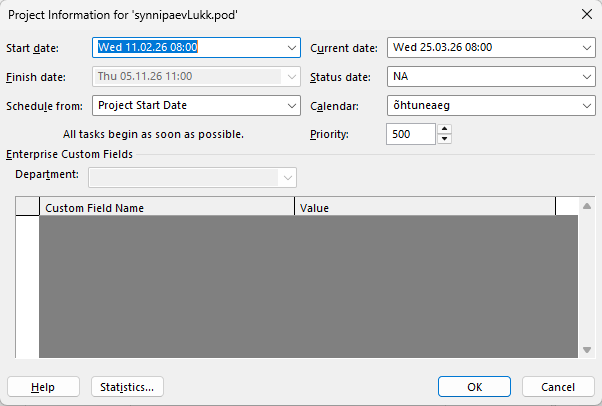
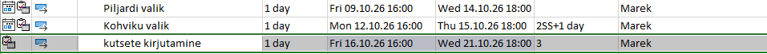

1. Uue kalendri loomine
Kõigepealt ava Microsoft Project ja vali ülemisest menüüst Project > Change Working Time. Seal näed vaikimisi kalendreid. Kui tahad teha oma kalendri, klõpsa nupul Create New Calendar. Pane kalendrile nimi, mis sobib sinu projektiga, näiteks “Ehitusprojekt 2025”.
Tavaliselt on hea luua eraldi kalender, kui sinu projektis on teistsugused tööpäevad või tööajad kui tavaline 8–17 tööpäev.

2. Tööpäevade muutmine
Kui kalender on loodud, saad muuta tööpäevi. Akna ülaosas vali vahekaart Work Weeks ja klõpsa Details. Nüüd saad valida, millised nädalapäevad on tööpäevad ja millised on puhkepäevad.
Näiteks, kui sinu meeskond töötab ka laupäeviti, märgi laupäev tööpäevaks. Kui pühapäev on alati vaba, jäta see mittevõtupäevaks. Nii näitab ajakava realistlikku töögraafikut.

3. Tööaja muutmine
Lisaks tööpäevadele saad muuta ka tööaega. Sama akna sees vali päevad, mida tahad muuta, ja sisesta uued tööaja vahemikud, näiteks 9:00–18:00 koos lõunapausiga.
Kui sinu projektis on vahetustega töö, võid lisada mitu ajavahemikku ühele päevale. Oluline on, et tööajad vastaksid päris elule, sest sellest sõltub, kui kiiresti ülesanded valmis saavad.

4. Eripäevade lisamine
Projektis on tihti eripäevi, näiteks riigipühad, ettevõtte üritused või planeeritud hoolduspäevad. Need tuleb kalendrisse lisada, et programm ei planeeriks nendel päevadel tööd.
Vali kalendriaknas konkreetne kuupäev ja märgi see mittevõtupäevaks. Võid lisada ka nime, näiteks “Jaanipäev” või “Firma koolituspäev”. Nii on hiljem lihtne aru saada, miks sel päeval tööd ei tehta.

5. Kalendri kasutamine projektis
Kui kalender on valmis, pead selle oma projektiga siduma. Ava uuesti Project Information ja vali rippmenüüst oma loodud kalender. Nüüd kasutab kogu projekt seda kalendrit vaikimisi.
Soovi korral saad määrata ka erinevatele ressurssidele oma kalendri. Näiteks kontoritöötajatel on üks kalender ja ehitusmeeskonnal teine. See aitab luua täpsema ajakava.


Kuidas kalender mõjutab ajakava
Kalender on projekti ajakava alus. Kui tööpäevad või tööajad on valesti, näitab Microsoft Project vale lõpptähtaega. See võib tekitada segadust nii meeskonnas kui ka kliendi jaoks.
Kui kalender on õigesti seadistatud, arvutab programm automaatselt, millal ülesanded saavad valmis, kui palju aega need võtavad ja millal projekt lõpeb. Nii saad paremini planeerida ressursse ja vältida ületunde.
Tagasi üles